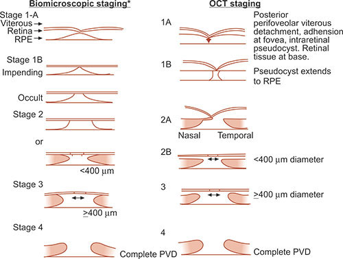

Gradings & Stagings in Ophthalmology
Grading & Staging
ADA Evidence Grading System for Clinical Practice Recommendations
Level of evidence | Description | |
A | Clear evidence from well-conducted, generalizable, randomized controlled trials that are adequately powered, including:
| |
Compelling nonexperimental evidence, i.e., the “all or none” rule developed by the Centre for Evidence-Based Medicine at Oxford |
| |
Supportive evidence from well-conducted randomized controlled trials that are adequately powered, including:
|
| |
B | Supportive evidence from well-conducted cohort studies, including:
| |
Supportive evidence from a well-conducted case-control study |
| |
C | Supportive evidence from poorly controlled or uncontrolled studies, including:
| |
Conflicting evidence with the weight of evidence supporting the recommendation |
| |
E | Expert consensus or clinical experience |
Grading of hypertensive retinopathy
Keith and Wegner (1939) have classified hypertensive retinopathy changes into following four grades:
Patients were grouped according to their ophthalmoscopic findings. As such, this was the first system to correlate retinal findings with the hypertensive disease state.
Grade I: It consists of mild generalized arteriolar attenuation, particularly of small branches, with broadening of the arteriolar light reflex and vein concealment.
Grade II: It comprises marked generalized narrowing and focal attenuation of arterioles associated with deflection of veins at arteriovenous crossings (Salus’ sign).
Grade III: This consists of Grade II changes plus copper-wiring of arterioles, banking of veins distal to arteriovenous crossings (Bonnet sign), tapering of veins on either side of the crossings (Gunn sign) and right-angle deflection of veins (Salu’s sign). Flame-shaped haemorrhages, cotton-wool spots and hard exudates are also present.
Grade IV: This consists of all changes of Grade III plus silver-wiring of arterioles and papilloedema.
One of the major limitations of this classification system is the difficulty in distinguishing early hypertensive retinopathy grades (e.g., grade 1 from grade 2); thus, a modified classification has been recently proposed.
Scheie classification (1953)
Staging under this system is as follows:
- Stage 0 - Diagnosis of hypertension but no visible retinal abnormalities
- Stage 1 - Diffuse arteriolar narrowing; no focal constriction
- Stage 2 - More pronounced arteriolar narrowing with focal constriction
- Stage 3 - Focal and diffuse narrowing, with retinal hemorrhage
- Stage 4 - Retinal edema, hard exudates, optic disc edema
The Scheie classification also grades the light reflex changes from arteriolosclerotic changes, as follows:
- Grade 0 - Normal
- Grade 1 - Broadening of light reflex with minimal arteriolovenous compression
- Grade 2 - Light reflex changes and crossing changes more prominent
- Grade 3 - Copper-wire appearance; more prominent arteriolovenous compression
- Grade 4 - Silver-wire appearance; severe arteriolovenous crossing changes
- Scheie Classification
Group | Hypertension | Arteriolar sclerosis |
0 | No changes | Normal |
1 | Barely detectable arteriolar narrowing | Barely detectable light reflex changes |
2 | Obvious arteriolar narrowing with focal irregularities | Obvious increased light reflex changes |
3 | Grade 2 plus retinal hemorrhages or exudates | Copper wire arterioles |
4 | Grade 3 plus papilledema | Silver wire arterioles |
Modified Scheie classification
Staging is as follows:
- Grade 0 - No changes
- Grade 1 - Barely detectable arterial narrowing
- Grade 2 - Obvious arterial narrowing with focal irregularities
- Grade 3 - Grade 2 plus retinal hemorrhages and/or exudates
- Grade 4 - Grade 3 plus disc swelling
Classification of hypertensive retinopathy by Wong and Mitchell
Grades |
| Description |
| Systemic associations |
No retinopathy | No detectable retinal signs | None | ||
Mild retinopathy (retinal arteriolar signs only) | One or more of the following arteriolar signs: • Generalised arteriolar narrowing • Focal arteriolar narrowing • Arteriovenous nicking • Arteriolar wall opacity (silver wiring) | Modest* association with risk of clinical stroke, subclinical stroke, coronary heart disease, and mortality. | ||
Moderate retinopathy | One or more of the following retinal signs: • Haemorrhage (blot, dot, or flame shaped) • Microaneurysm • Cottonwool spot • Hard exudates | Strong† association with risk of clinical stroke, subclinical stroke, cognitive decline, and cardiovascular mortality | ||
Malignant retinopathy | Moderate retinopathy plus optic disc swelling‡ | Strong association with mortality |
Grading of DR:
1. Mild NPDR: At least one microaneurysm or intraretinal hemorrhage.
Hard/soft exudates may or may not be present.
2. Moderate NPDR: Moderate microaneurysms/intraretinal hemorrhage.
Early mild IRMA.
Hard/soft exudates may or may not present.
3. Severe NPDR. Any one of the following (4-2-1 Rule):
Four quadrants of severe microaneurysms/ intraretinal hemorrhages.
Two quadrants of venous beading.
One quadrant of IRMA changes.
4. Very severe NPDR. Any two of the following (4-2-1 Rule):
Four quadrants of severe microaneurysms/ intraretinal hemorrhages.
Two quadrants of venous beading.
One quadrant of IRMA changes.
Proliferative diabetic retinopathy (PDR)
- PDR without HRCs (Early PDR) and
- PDR with HRCs (Advanced PDR). High risk characteristics (HRC) of PDR are as follows (Fig. 11.14F):
1. NVD 1/4 to 1/3 of disc area with or without vitreous haemorrhage (VH) or pre-retinal haemorrhage (PRH)
2. NVD < 1/4 disc area with VH or PRH
3. NVE > 1/2 disc area with VH or PRH
clinically significant macular edema (CSME) if one of the following three criteria are present on slit-lamp examination with 90D lens:
- Thickening of the retina at or within 500 micron of the centre of the fovea.
- Hard exudate at or within 500 micron of the centre of fovea associated with adjacent retinal thickening and not residual hard exudates remaining after the disappearance of retinal thickening
- Development of a zone of retinal thickening one disc diameter or larger in size, at least a part of which is within one disc diameter of the foveal centre.
DME
Based on OCT DME can be classified into different pattern such as
1. cystoid macular edema,
2. spongy swelling of the retina,
3. hard exudates,
4. serous detachment,
5. macular traction,
6. taut posterior hyaloid membrane.
Grading of trachoma
McCallan's classification
McCallan in 1908, divided the clinical course of the trachoma into following four stages:
- Stage I (Incipient trachoma or stage of infiltration). It is characterized by hyperaemia of palpebral conjunctiva and immature follicles.
- Stage II (Established trachoma or stage of florid infiltration). It is characterized by appearance of mature follicles, papillae and progressive corneal pannus.
- Stage III (Cicatrising trachoma or stage of scarring). It includes obvious scarring of palpebral conjunctiva.
- Stage IV (Healed trachoma or stage of sequelae). The disease is quite and cured but sequelae due to cicatrisation give rise to symptoms.
WHO
TF = trachomatous inflammation (follicular): five or more follicles (>0.5 mm) on the superior tarsus
TI = trachomatous inflammation (intense):diffuse involvement of the tarsal conjunctiva, obscuring 50% or more of the normal deep tarsal vessels; papillae are present
TS = trachomatous conjunctival scarring: easily visible fibrous white tarsal bands
TT = trachomatous trichiasis: at least one lash touching the globe
CO = corneal opacity sufficient to blur details of at least part of the pupillary margin
WHO grading of Xerophthalmia
XN = night blindness
X1 = conjunctival xerosis (X1A) with Bitot spot (X1B)
X2 = corneal xerosis
X3 = corneal ulceration, less than one-third (X3A); more than one-third (X3B)
XS = corneal scar
XF = xerophthalmic fundus
Grading of nucleus hardness on slit-lamp biomicroscopy
Grade I: Soft, White or greenish yellow
Grade II: Soft-medium, Yellowish
Grade III: Medium-hard, Amber
Grade IV: Hard, Brownish
Grade V: Ultrahard, Blackish (rock-hard)
Grading of severity of Chemical Injury
Grading is performed on the basis of corneal clarity and severity of limbal ischaemia (Roper-Hall system); the latter is assessed by observing the patency of the deep and superficial vessels at the limbus (Fig. 21.29A).
PVR Gradings: (Retina Society Terminology Committee, 1983)
Grade A: vitreous changes (RPE clumps, protein flare)
Grade B: surface wrinkling, rolled edge of tears, vascular tortuosity
Grade C: full thickness retinal folds
Ryan:
C1,C2,C3: 1,2,3 quadrent respectively
Jakobiec:
C1: Posterior star fold
C2: Posterior confluent irregular folds
C3: Posterior subretinal ‘napkin irregular elevation of retina
C4: Anterior irregular folds
C5: Anterior smooth circumferential retinal fold in coronal plane
C6: Anterior circumferential fold of retina at insertion of posterior hyaloid
Grade D: Fixed Retinal Fold in four quadrents
D1: Wide Funnel Shape
D2: Narrow Funnel Shape
D3: Closed Funnel Shape
This classification system has following disadvantages:
· There was no clinical correlation between the most severe form (grade D) and visual prognosis.
· There was limited quantification of extent of disease.
· This system did not include PVR anterior to the equator.
The new classification system consists of the following modified PVR grades:
A – Pigment clumps in the vitreous cavity, vitreous haze
B – Retinal wrinkling breaks with rolled edges, retinal rigidity, vascular tortuousity, and decreased vitreous mobility
C – Full thickness fixed folds (subdivided into anterior and posterior forms)
Extent of involvement expressed in clock hours (subdivided into contraction types):
CP1-12
CA1-12
1. Focal posterior – single or multiple isolated folds posterior to vitreous base.
2. Diffuse posterior – confluence of focal epicenters posterior to vitreous base.
3. Subretinal proliferations –bands of moth eaten sheets; extent quantified if retina is elevated.
4. Circumferential traction along the posterior edge of vitreous base with central displacement of retina and radial folds posteriorly.
5. Anterior traction – vitreous base displaced to pars plicata, iris or pupillary margin.
Shortcomings of these classifications are that they do not take into account important features that influence the prognosis.
1. Number, location and size of retinal breaks
2. Number and type of previous operation
3. Time course and biological activity of the proliferative process.
· Stages of development of PVR (CPEC)
- Cellular activation
- Proliferation
- Extracellular matrix elaboration and remodeling
- Contraction
Eales’ Disease (PINK)
Charmis Classification:
- Stage of Active Phlebitis
- The Stage of Persistent Ischaemia
- The Stage of Vascular Proliferation
- The Stage of Complications
Eales’ disease staging system (Saxena S)
This classification system is based on both fundoscopic and fluorescein angiographic variables that
have been shown to be prognostic of visual outcome.
A. Eales’ disease
Stage 1a Periphlebitis of small caliber vessels with superficial retinal hemorrhages.
Stage 1b Periphlebitis of large caliber vessels with superficial retinal hemorrhages.
Stage 2a Peripheral capillary nonperfusion.
Stage 2b Neovascularization elsewhere /Neovascularisation of the disc.
Stage 3a Fibrovascular proliferation.
Stage 3b Vitreous hemorrhage.
Stage 4a Traction / combined rhegmatogenous detachment.
Stage 4b Rubeosis iridis, neovascular glaucoma, complicated cataract, and optic atrophy.
B. Central Eales’ disease
Macular Hole
0: premacular hole
1: impending macular holes
small yellow spot (stage lA) or yellow ring (stage IB) in the center of the fovea.
2: A stage 2 macular hole represents the progression of a foveal pseudocyst to a full thickness dehiscence, as a tractional break develops in the “roof ” (inner layer) of the pseudocyst (<400um)
3: A stage 3 macular hole is a fully developed hole (>400 um diameter),
4: A stage 4 macular hole is a fully developed hole with a complete posterior vitreous detachment signified by a Weiss ring
Gass classification of ERM
● Grade 0 – cellophane maculopathy
So called due to cellophane-like sheen seen on ophthalmoscopic examination
No associated visual distortion
● Grade 1 – crinkled cellophane maculopathy
Membrane causes an irregular wrinkling of inner retinal surface (Figure 5)
Contraction of the membrane causes formation of retinal folds
Fine superficial folds extend out from the margins of the membrane
If wrinkling is severe enough, paramacular vessels may be pulled towards the fovea in a corkscrew
formation. This is seen well on FFA
Normally cystoid macular oedema, retinal haemorrhage, exudates and retinal pigment epithelial
disturbances are absent
Patient will report visual disturbance and VAs of 6/12 or worse are common
● Grade 2 – macular pucker
Membrane will be thick and opaque, especially for those membranes which develop following
retinal detachment surgery
Full thickness puckering of the macula may be present along with oedema, small hemorrhages,
cotton-wool spots and sometimes localised retinal detachment
Vision will be severely debilitated with VAs often worse than 6/60
Classification of the posterior vitreoretinal interface
0: No PVD
1: Incomplete perifoveal PVD in up to 3 quadrants
2: Incomplete perifoveal PVD in all 4 quadrants with residual attachment to the fovea and optic disc
3: Incomplete PVD over the posterior pole with residual attachment to the optic disc
4: Complete PVD identified biomicroscopically, but posterior hyaloid face not visible on OCT imaging
Stages of Age-Related Posterior Vitreous Detachment
Stage 1: Perifoveal separation with vitreofoveal adhesion.
Stage 2: Complete vitreomacular separation.
Stage 3: Widespread vitreous separation except at the optic disk margin.
Stage 4: Complete, clinically recognizable PVD.
Grading of angle width
Shaffer system
The Shaffer system records the angle in degrees between two imaginary lines tangential to the inner surface of the trabeculum and the anterior surface of the iris about one-third of the distance from its periphery. In practice, the angle is graded by many according to the visibility of various structures. The system assigns a numerical grade to each quadrant of the angle as below (Fig. 10.17); it should be borne in mind that most angles are narrowest superiorly.
ü Grade 4 (35–45°) is the widest angle, characteristic of myopia and aphakia, in which the ciliary body can be visualized with ease.
ü Grade 3 (25–35°) is an open angle in which at least the scleral spur can be identified.
ü Grade 2 (20°) is a moderately narrow angle in which only the trabeculum can be identified.
ü Grade 1 (10°) is a very narrow angle in which only Schwalbe line, and perhaps also the top of the trabeculum, can be identified.
ü Slit angle is one in which there is no obvious iridocorneal contact but no angle structures can be identified.
ü Grade 0 (0°) is a closed angle due to iridocorneal contact and is recognized by the inability to identify the apex of the corneal wedge. Indentation gonioscopy will distinguish ‘appositional’ from ‘synechial’ angle closure (see Fig. 10.20).
R P C classification
Grade 0 Closed
Grade 1 dipping of light
Grade 2 Schwalbe’s line visible
Grade 3 anterior trabecular meshwork
Grade 4 posterior T M scleral spur
Grade 5 ciliary body band visible
Grade 6 root of iris visible
Grade the amount of TM pigment :
Scheie suggested a system of grading
0 none, +1 trace, +2 mild, +3 moderate, +4 severe
(+3 corresponds to iris pigmentation)
Grading anterior chamber cells (SUN-Standardization of uveitis nomenclature)
Other grading systems are Schlaegel’s & Hogan’s.
<1 -0
1–5 -±
6–15 -+1
16–25 -+2
26–50 -+3
>50 -+4
Grading of aqueous flare (SUN Working Group Grading Scheme)
Nil -0
Just detectable -+1
Moderate (iris and lens details clear) +2
Marked (iris and lens details hazy) +3
Intense (fibrinous exudate) +4
Grading of vitreous haze
According to EVS:
Good view of nerve fibre layer (NFL) 0
Clear disc and vessels but hazy NFL +1
Disc and vessels hazy +2
Only disc visible +3
Disc not visible +4
The grading of arteriolosclerosis:
Grade 1: subtle broadening of the arteriolar light reflex, mild generalized arteriolar attenuation, particularly of small branches, and vein concealment.
Grade 2: obvious broadening of the arteriolar light reflex and deflection of veins at arteriovenous crossings (Salus sign).
Grade 3:
Ø ‘Copper-wiring’ of arterioles (Fig. 13.51C).
Ø Banking of veins distal to arteriovenous crossings (Bonnet sign).
Ø Tapering of veins on both sides of the crossings (Gunn sign) and right-angled deflection of veins.
Grade 4: ‘Silver-wiring’ of arterioles associated with grade 3 changes.
Staging of ROP
The following five stages are used to describe the abnormal vascular response at the junction of immature avascular peripheral retina and vascularized posterior retina. Because more than one ROP stage may be present in the same eye, staging for the eye as a whole is determined by the most severe manifestation.
· Stage 1 (demarcation line) is a thin, flat, tortuous, grey-white line running roughly parallel with the ora serrata. It is more prominent in the temporal periphery. There is abnormal branching or ‘arcading’ of vessels leading up to the line (Fig. 13.60A).
·
· Stage 2 (ridge) arises in the region of the demarcation line, has height and width, and extends above the plane of the retina. Blood vessels enter the ridge and small isolated neovascular tufts (‘popcorn’) may be seen posterior to it (Fig. 13.60B).
· Stage 3 (extraretinal fibrovascular proliferation) extends from the ridge into the vitreous (Fig. 13.60C). It is continuous with the posterior aspect of the ridge, causing a ragged appearance as the proliferation becomes more extensive. The severity of stage 3 can be subdivided into mild, moderate and severe depending on the extent of extraretinal fibrous tissue infiltrating the vitreous. The highest incidence of this stage is around the post-conceptual age of 35 weeks.
· Stage 4 (partial retinal detachment) is divided into extrafoveal (stage 4A – Fig. 13.60D) and foveal (Stage 4B). The detachment is generally concave and circumferentially orientated. In progressive cases the fibrous tissue continues to contract and the detachment increases in height and extends anteriorly and posteriorly.
· Stage 5 is a total retinal detachment.
· Grading of North Carolina macular dystrophy
1. Grade 1 is characterized by yellow-white, drusen-like peripheral (Fig. 15.33A) and macular deposits which develop during the 1st decade and may remain asymptomatic throughout life.
2. Grade 2 is characterized by deep, confluent macular deposits (Fig. 15.33B). The long-term visual prognosis is guarded because some patients develop neovascular maculopathy (Fig. 15.33C) and subretinal scarring.
3. Grade 3 is characterized by coloboma-like atrophic macular lesions (Fig. 15.33D) associated with variable impairment of visual acuity.
· Grading of binocular vision
1. simultaneous perception, SP
2. fusion
3. stereopsis
· NVG
(a) rubeosis iridis, (b) secondary open-angle glaucoma and (c) secondary synechial angle-closure glaucoma.
· Stages of Proliferative retinopathy
Stage 1 shows peripheral arteriolar occlusion and ischaemia.
Stage 2 is characterized by peripheral arteriovenous anastomoses of dilated pre-existing capillary channels (Fig. 13.55A).
Stage 3
Sprouting of new vessels from the anastomoses; these have a ‘sea-fan’ configuration and are usually fed by a single arteriole and drained by a single vein (Fig. 13.55B and see Fig. 13.56A).
About 30–40% of sea-fans involute spontaneously as a result of auto-infarction and appear as greyish fibrovascular lesions (Fig. 13.55C). Involution most frequently occurs about 2 years after the development of retinopathy.
Stage 4. The neovascular tufts may continue to proliferate and bleed into the vitreous (Fig. 13.55D).
Stage 5 is characterized by extensive fibrovascular proliferation (Fig. 13.55E) and retinal detachment
· ocular GVHD
Jab et al. described four stages of ocular GVHD:
Stage I – hyperemia; Stage II – hyperemia with serosanguinous chemosis; Stage III – pseudomembranous conjunctivitis; and Stage IV – pseudomembranous conjunctivitis with corneal epithelial sloughing.
· OCP
The disease progression of OCP has classically been documented into one of four stages.[7] Stage I denotes chronic conjunctivitis with subepithelial fibrosis. Stage II refers to inferior fornix foreshortening. Stage III describes symblepharon formation typically involving the inferior fornix. Finally, stage IV is the end-stage characterized by ankyloblepharon formation and corneal scarring
· neurotrophic keratitis
Mackie[45] characterized three stages of neurotrophic keratitis. Stage one includes an often subtle irregular corneal surface, which later develops into an easily recognized punctate keratitis. Stage two is characterized by a frank epithelial defect, which typically is associated with mild anterior stromal inflammation ( Fig. 4-17-9 ). Folds in Descemet’s membrane often develop. The epithelium at the edges of the defect tends to be characteristically “heaped up” with grayish, swollen epithelium. The ulcer typically found in the lower, exposed, paracentral cornea and is generally oval in shape ( Fig. 4-17-10 ). Stage three involves stromal melting and occasionally perforation. Other characteristic symptoms include red eye, mild foreign body sensation, blurred vision, and lid edema. The severity of the anesthesia generally corresponds to the severity of the keratitis.
· spheroidal degeneration
Three stages of the primary form have been described:
Grade I – fine shiny droplets are present only peripherally without symptoms.
Grade II – the central cornea is involved and vision may be as low as 20/100 (6/30).
Grade III – there are large corneal nodules and vision is no better than 20/200 (6/60).
· PSR
Because PSR can lead to severe vision loss, it was classified into five stages by Goldberg. [2] [12] [15] This progression of retinopathy typically occurs in the third or fourth decade of life but has been noted as early as the second decade. The five stages are as follows:
1. Peripheral arteriolar occlusions.
2. Arteriolar-venular anastomoses.
3. Neovascular proliferation.
4. Vitreous hemorrhage.
5. Retinal detachment.
· Lyme disease
is characterized by three main stages:
Primary, or initial, phase with rash noted at the site of the inoculum (erythema chronicum migrans). Associated flu-like symptoms can be noted.
Secondary or dissemination phase with systemic signs and symptoms including dermatologic, neurologic, and cardiac manifestations.
Tertiary or late phase with associated arthritis, meningoencephalitis, polyneuropathies involving both cranial and peripheral nerves, and carditis.
· Sarcoidosis
Stage I consists of bilateral hilar adenopathy alone.
Stage II adds parenchymal involvement.
In stage III, parenchymal disease predominates without prominent hilar involvement.
Stage IV is advanced disease characterized by pulmonary fibrosis.
· RHABDOMYOSARCOMA
There are four stages:
I. Localized tumor, completely resected
II. Regional spread, ± positive nodes, grossly resected
III. Gross residual tumor remaining after incomplete resection
IV. Distant metastases
· OSD
Van Bijsterveld created a grading scale for rose bengal dye that divides the ocular surface into three zones: nasal bulbar conjunctiva, cornea, and temporal bulbar conjunctiva, each graded 0–3 (0, none; 3, confluent staining).[36] Lemp and the National Eye Institute/Industry Workshop group[15] suggest that the conjunctiva be divided into six areas and graded in a similar manner ( Fig. 4-23-4 ). Alternatively, lissamine green stains for cell death or degeneration, as well as cell-to-cell junction disruption, but does not irritate the eye.
· RAPD
Grade I: weak initial constriction followed by greater redilation;
Grade II: a slight “stall” in movement, followed by a definite dilation;
Grade III: immediate pupillary dilation [i.e., pupillary escape];
Grade IV: pupillary dilation during prolonged illumination of the contralateral eye for 6 seconds, followed by constriction;
Grade V: immediate pupillary dilation and no signs of constriction), these systems are subject to inter-observer errors and are affected by pupillary size; e.g., the small pupil may not show a detectable initial constriction.
The amount of pupillomotor input asymmetry (the RAPD) may be estimated roughly using the alternating light test (without any neutral density filters) and the subjective grades +1, +2, +3, or +4 for asymmetry of pupillary response.
This subjective grading also may be categorized according to the amount of “pupil escape,” or dilatation of the pupils, as the light is alternated between the eyes.[13] However, most subjective grading of RAPDs has serious limitations, such as some large-scale errors that arise from age variations in pupil size and pupil mobility. For example, a patient who has small pupils and small pupillary contractions to light may have a large RAPD, but this may appear deceptively small on the basis of small differences in pupil excursion observed as the light is alternated between the two eyes. However, the amount of neutral density filter needed to dim the better eye until the small contractions are equal represents substantial input damage. To estimate the size of RAPDs without using filters is very much like the estimation of an ocular deviation “by Hirschberg” without a prism cover test. More accurate quantification of RAPDs is accomplished by determination of the log unit difference needed to “balance” the pupil reaction between the two eyes. [4] [5] Photographic neutral density filters (49mm, screw mount, 0.3 log, 0.6 log, and 0.9 log) often are available through local photography stores.
· VAN HERRICK GRADING OF THE PERIPHERAL ANTERIOR CHAMBER DEPTH
4: > 1 PCT
3: ¼ to ½ PCT
2: ¼ PCT
1: < ¼ PCT
Slit: Dangerously narrow
· limbal chamber depth method
The limbal chamber depth method of grading the peripheral anterior chamber is a recent modification of the van Herick test.[37] Instead of the four grades used in the van Herick method, it has seven grades that are expressed as a percentage fraction of the thickness of the adjacent cornea: 0%, 5%, 15%, 25%, 40%, 75%, and 100%. The limbal chamber depth method has been demonstrated to perform better in the detection of established PACG and is now widely used in epidemiologic research.
· GRADING OF HYPERDEVIATION
Trace: 5
1+: 10
2+: 20
3+: 30
4+: 45
BEST’s Disease
Best's disease has been described as going through four phases based on fundus examination.
- The first, the previtelliform stage, is characterized by a normal fundus appearance.
- The second stage, the vitelliform stage, usually occurs in early childhood and is characterized by a well-circumscribed 0.5-2-disk-diameter yellow lesion that looks like the yolk of an egg and appears to be located under the pigment epithelium. This is usually 0.5-2 optic disk diameters in size. Acuity is usually normal or slightly reduced. The lesion may be unilateral, and a yellowish change may be noted in the RPE throughout the fundus.
- During the teenage years, or thereafter, the yellow lesion can break through the RPE into the subretinal space, and the yellow material can accumulate inferiorly in the macula in the subretinal space to form pseudohypopyon (the third stage).
- A scrambled-egg appearance to the fundus then follows, with yellow deposits scattered throughout the posterior pole (the fourth stage).
Lasers
Lasers are divided into four “classes” based on their strength of output.
Class 1 lasers, with a maximum output that is <0.4 mW, are considered the safest lasers and are believed incapable of causing damage even if viewed for long periods of time.
Class 2 lasers have a maximum output <1 mW. These are also felt to be extremely unlikely to result in ocular injury because of protective mechanisms conferred by the body’s natural blink response and aversion reflexes.
Class 3A lasers have a maximum output between 1 mW and 5 mW, and although they cannot cause immediate eye injury, they can induce damage if stared directly at for sustained periods of time. Most laser pointers that are available in the United States are class 2 or class 3A lasers.
Class 3B lasers are much more powerful, with a maximum output between 5 mW and 500 mW. These are believed to be capable of producing ocular damage immediately upon viewing. Although these lasers are illegal in some countries, they can be obtained quite easily via the Internet.
Class 4 lasers are the most powerful lasers, boasting a maximal output >500 mW. These are typically used in military and occupational settings, such as laser shows. They are capable of producing extensive ocular damage. Given the brevity of our patient’s exposure that still resulted in retinal injury, the laser involved was most likely a class 3B laser.
VKH
- Prodromal phase lasting a few days is characterized by neurological and auditory manifestations.
• Meningitis causing headache and neck stiffness.
• Encephalopathy is less frequent and may manifest with convulsions, paresis and cranial nerve palsies.
• Auditory features include tinnitus, vertigo and deafness.
- Acute uveitic phase follows soon thereafter and is characterized by bilateral granulomatous anterior or multifocal posterior uveitis and exudative retinal detachments.
- Convalescent phase follows several weeks later and is characterized by:
• Localized alopecia, poliosis and vitiligo (Fig. 11.69).
• Focal depigmented fundus lesions (sunset glow fundus) and depigmented limbal lesions (Sugiura sign).
- Chronic-recurrent phase is characterized by smouldering anterior uveitis with exacerbations.
Coat’s Disease:
stage 1, telangiectasia only;
stage 2, telangiectasia and exudation (2A, extrafoveal; 2B foveal);
stage 3, exudative retinal detachment (3A, subtotal; 3B total);
stage 4, total detachment with secondary glaucoma; and
stage 5, advanced end-stage disease.
House-Brackmann Facial Nerve Grading System
Grade Description Characteristics
I Normal Normal facial function
II Mild dysfunction Very slight weakness found on close inspection; good forehead
function; complete and quick eyelid closure
III Moderate dysfunction Obvious but not disfiguring asymmetry; mild synkinesis; slight
forehead movement; complete eyelid closure with effort
IV Moderately severe dysfunction
Disfiguring asymmetry; no forehead movement; incomplete
eyelid closure
V Severe dysfunction Barely perceptible facial movement; incomplete eyelid closure
VI Total paralysis No movement
FUCH’S DYSTROPHY
The first stage is asymptomatic, but guttae can be seen centrally on the posterior aspect of a thickened Descemet membrane. In the second stage, the patient may experience increased glare and a painless decrease in vision due to corneal edema. The cornea may begin to decompensate. In the third stage, vision deteriorates further owing to advanced corneal edema, and the patient may experience pain from the formation of epithelial and subepithelial bullae. The fourth stage is characterized by profound vision loss due to subepithelial scarring, which histologically appears as diffuse avascular subepithelial connective tissue.
Corneal Ulcer
Stage 0: Stage of Infiltrate
Stage 1: Progressive Stage
Stage 2: Regressive Stage
Stage 3: Healing Stage
CHARACTERISTIC | MILD | MODERATE | SEVERE |
SIZE DEPTH INFILTRATE SCLERA | <2mm <20% SUPERFICIAL NOT INVOLVED | 2-5 mm 20 –50 % MID STROMAL NOT INVOLVED | >5mm >50 % DEEPER MAY BE INVOLVED |
PAPILLOEDEMA
1 | |
2 | |
3 | |
4 |
Stages of Filtering Bleb Infections
l Stage 1:
• Purulent bleb
• +/- AC reaction
l Stage 2:
• Purulent bleb
• Moderate AC inflammation
l Stage 3:
• Endophthalmitis with marked AC reaction, vitritis
Grading system of atrophia and phthisis bulbi
I Atrophy bulbi without shrinkage
II Atrophia bulbi with shrinkage
III Atrophia bulbi with shrinkage and disorganization (phthisis bulbi)
IV Phthisis bulbi with intraocular ossification
V Phthisis bulbi with intraocular calcium deposition
posterior staphyloma
A posterior staphyloma is a backward ectasia of the fundus, the hallmark being tessellation and pallor of the area involved (Figure3). Posterior staphyloma can be of five types[7]:-
Type 1- The area of tessellation and pallor includes the region of the optic disc and macula. It is the most common type
Type 2- includes the region of the macula
Type 3- involves the peri-papillary region
Type 4- extends nasally from the disc
Type 5- most rare and involves the fundus inferior to the optic disc
Chorioretinal Laser coagulation Grades
Grade 1/Light: Barely visible blanching of retinal pigment epithelium (RPE)
Grade 2/Mild: Hazy, faint white retinal coagulation
Grade 3/Moderate: Opaque, dirty white retinal coagulation
Grade 4/Heavy: Dense white, chalky retinal coagulation
Ectropion Grading (Rubin et al)
grade 1 — the lower punctum just pointing upwards away from globe (punctal ectropion)
grade 2 — partial everted lower lid and visible scleral show
grade 3 — the presence of conjunctival hyperemia and gross mucosal thickening and
grade 4 — as for grade 3 with additional exposure keratitis
Depending upon the degree of outrolling, ectropion can be divided into three grades.
In grade I ectropion only punctum is everted.
In grade II lid margin is everted and palpebral conjunctiva is visible,
In grade III the fornix is also visible.
Cortical Visual Impairment
Roman-Lantzy phases
Phase is a period in the resolution of CVI that indicates degree or severity of CVI.
Phase 1: building visual behavior
Phase 2: integrating vision with function
Phase 3: resolution of remaining CVI characteristics
- compiled & published by Dr Dhaval Patel MD AIIMS